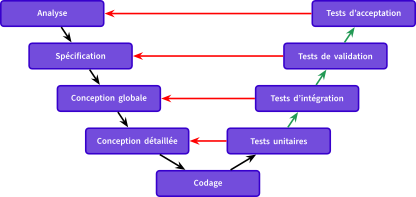
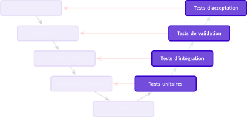

2A - Bachelor Universitaire de Technologie
IUT d'Orsay - Université Paris-Saclay - 2023/2024
IUT d'Orsay - Université Paris-Saclay - 2023/2024

Processus de développement en V


Les activités de tests
Dans ce cours
La philosophie du Test
- Pas de différence entre test et débogage.
- déboguer avec des jeux d'entrées
- Le test sert à montrer que le logiciel fonctionne.
- exécuter une suite de tests sans défaillance
- Le test montre la présence d'erreurs mais pas leur absence.
- permettre de diminuer le risque.
Les tests unitaires
- Un test unitaire est un script permettant de valider
le fonctionnement d'une partie d'un module.- une méthode, une class, une interface, ...
- En Java, le framework (JUnit), offre des fonctionnalités
permettant le développement des tests unitaires.
Les annotations
Les annotations
La classe Assertions
La documentation de la classe Assertions
La classe Assertions
La classe Assertions
Code Java à tester
Code Java à tester
Premier test JUnit5
import org.junit.jupiter.api.*;
import static org.junit.jupiter.api.Assertions.*;
public class ContactManagerTest {
@Test
public void shouldCreateContact() {
ContactManager contactManager = new ContactManager();
contactManager.addContact("John", "Doe", "0123456789");
assertTrue(! contactManager.getAllContacts().isEmpty());
assertFalse(contactManager.getAllContacts().isEmpty());
assertEquals(1, contactManager.getAllContacts().size());
}
}
Cycle de vie d'un test JUnit
Répéter des tests avec JUnit
Les tests paramétrés
Les tests ignorés
Tests des exceptions avec JUnit
Utilisation de la méthodeassertThrows
import org.junit.jupiter.api.*;
import static org.junit.jupiter.api.Assertions.*;
public class ContactManagerTest {
@Test
public void shouldThrowRuntimeExceptionWhenFirstNameIsNull() {
ContactManager contactManager = new ContactManager();
Assertions.assertThrows(RuntimeException.class, () -> {
contactManager.addContact(null, "Doe", "0123456789");
});
}
}